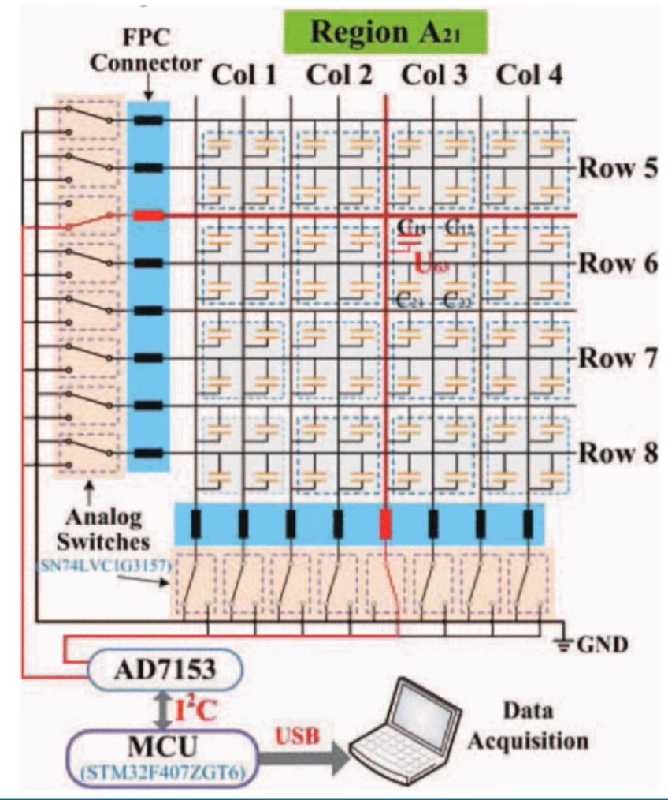
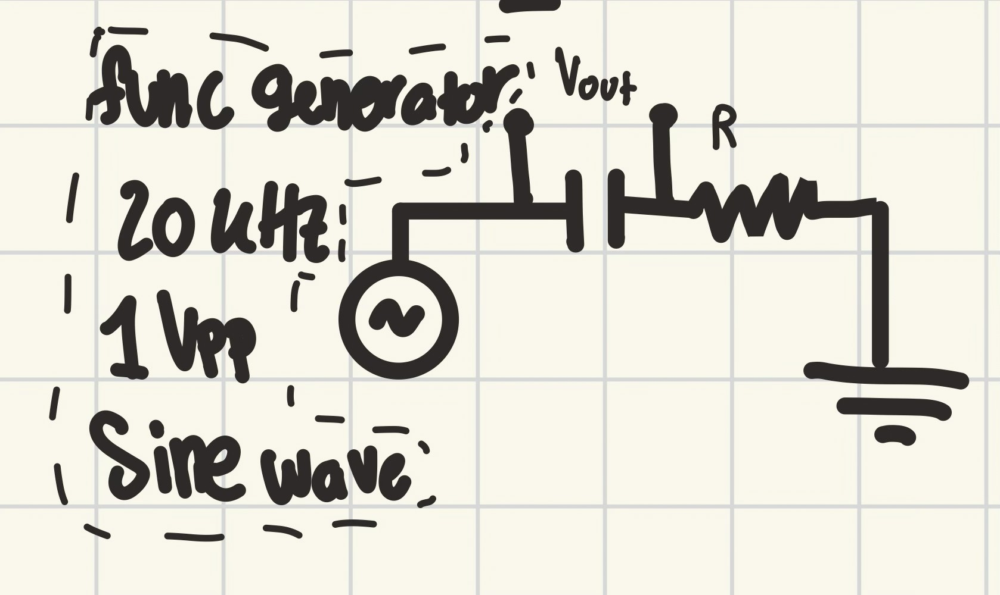
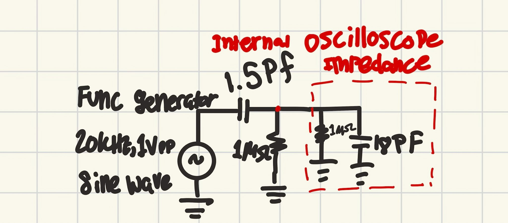
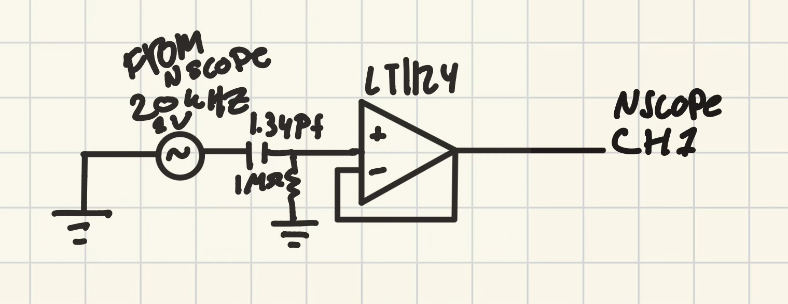
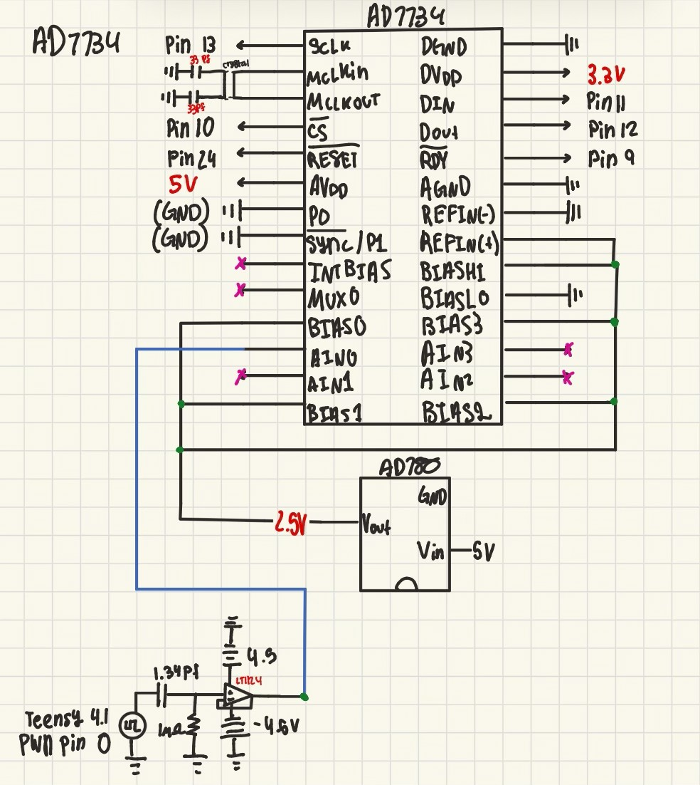

Custom Capacitance-to-Digital Converter Circuit
HAND ERC
Overview
Over the summer, I worked at Northwestern's HAND ERC, a research center focused on robotic dexterity. Within HAND, I am part of the soft-sensing subteam, whose goal is to build a full-coverage capacitive sensing skin to enable high-resolution tactile perception in robotic hands. Specifically, I am designing a custom capacitance-to-digital converter that can read capacitances as low as 1 picofarad through matrix addressing, allowing us to measure the capacitance at every node in the skin.
Matrix Addressing
Matrix addressing is a technique used to reduce the number of connections in a large array of capacitive sensors. Each sensor is located at the intersection of a row and a column, reducing the number of wires required.

How it works
Every row and column of our capacitor matrix will be connected to analog switches that switch between the row or column output and ground. The MCU sequentially scans every row and column, connecting each capacitive sensor to the CDC to obtain a measurement. Meanwhile, the other capacitors are connected to ground to reduce the parasitic capacitance generated by the unused sensors.
This process is repeated rapidly across the array so that our system can detect exactly what is affecting the array and where the change is occurring. As a result, our CDC will need to provide a faster conversion rate to scan the matrix many times per second and capture how the array is changing. In some systems, the number of CDCs is increased to accommodate a large number of rows and columns, further increasing the scanning speed of the array.
Primary Challenges
- Current CDCs operate at 90 Hz, but to make the skin as human-like as possible, we are aiming for a CDC operating at 1,000 Hz.
- The system must shield against parasitic capacitance.
- The system must provide high resolution.
- The system must be able to detect capacitances in the picofarad range.
Current Research
This project is still in progress and is expected to be completed in December 2026.
Over the past few months, I have been experimenting with reading the voltage of a single capacitive sensor using various methods and pieces of equipment. I first determined the best way to measure the voltage using an oscilloscope and created a MATLAB program to calculate the capacitance experienced by the sensor based on these voltage measurements.

Initial RC capacitive sensor circuitAfter comparing my calculated capacitances with the known capacitance, I moved on to reading the circuit using a DAC and an nScope, a single device that functions as both a function generator and an oscilloscope, to determine whether I could achieve similar results. As I tested these different systems, I realized that the input impedances of these devices, which can usually be considered negligible, were significantly affecting my circuit because it used a 1-picofarad capacitive sensor. This resulted in the data I had collected being inaccurate.

Input impedance from the oscilloscopeTo solve this problem, I implemented a buffer op-amp to isolate the impedances I wanted my system to measure from the input impedances of devices such as the DAQ or nScope. Adding the buffer op-amp allowed me to accurately read the voltage of my capacitive sensor. After extensive debugging, I decided that the best way to read the voltage of this circuit in a repeatable manner for the PCB I will design later this year would be to use a high-resolution ADC and microcontroller. This approach allows me to accurately measure the voltage without an oscilloscope, and it is the system I am currently debugging and testing.

Buffer op-amp schematic
Current ADC + MCU schematic